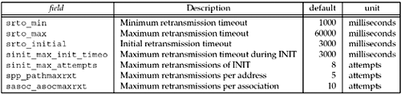

| [ Team LiB ] |
|
23.11 Controlling TimingSCTP has many controls that are user-tunable. All of these advanced controls are accessed via socket options we discussed in Section 7.10. In this section, we will highlight some of the specific controls that influence how long an SCTP endpoint will take to declare either an association or destination failure. There are seven specific controls that dictate failure detection time in SCTP (Figure 23.16). Figure 23.16. Fields that control timing in SCTP. Each of these parameters influences how quickly SCTP will detect failure or attempt retransmission. We can think of these as control knobs that either shorten or lengthen the time it takes for an endpoint to detect failure. We first examine two scenarios:
In Scenario 1, the system trying to open the connection would first set its RTO timer to the srto_initial value of 3,000 ms. After a timeout, it would retransmit the INIT message and double the RTO timer to 6,000 ms. This behavior would continue until it had sent sinit_max_attempts, or eight INIT messages, and had subsequently timed out on each of the transmissions. The doubling of the RTO timer would be capped at sinit_max_init_timeo, or 60,000 ms. Therefore, it would take 3+6+12+24+48+60+60+60, or 273 seconds, to reach the point where the SCTP implementation would declare the potential peer unreachable. There are a number of knobs and combinations of knobs we can tune to shorten or lengthen this time. First, let's focus on the influence of two specific parameters we can use to shorten the time from 270 seconds. One change we can make is to decrease the number of retransmissions by changing sinit_max_attempts. An alternative change that can also be made is to reduce the maximum RTO value for the INIT by changing srto_max_init_timeo. If we lower the number of attempts to 4, our detection time to failure drops drastically to 45 seconds, one-sixth of what the default value gives us. But this method has a drawback: We may experience a case where our peer is available, but due to loss in the network, or perhaps overload at the peer, we declare the peer to be unreachable. Another approach is to lower the srto_max_init_timeo to 20 seconds. This decreases our failure detection time to 121 seconds, less than one-half of the original value, but this change also carries with it a tradeoff. If we pick a value that is too low, it is possible that excessive delay in the network would cause us to send many more INIT messages than needed. Now let's turn our attention to Scenario 2, in which there are two multihomed peers communicating with each other. One endpoint has the addresses IP-A and IP-B, the other IP-X and IP-Y. If one of them becomes unreachable (assuming data was being sent by the peer that was not powered down), the sending endpoint sees successive timeouts to each destination starting at a value of srto_min (default 1 second) and doubling until both destinations reach srto_max (default 60 seconds). The endpoint would retransmit until it reached the association maximum sasoc_asocmaxrxt (default 10 retransmissions). Now in our scenario, the sending endpoint would see timeouts at 1(IP-A) + 1(IP-B)+ 2(IP-A) + 2(IP-B) + 4(IP-A) + 4(IP-B) + 8(IP-A) + 8(IP-B) + 16(IP-A) + 16(IP-B), for a total of 62 seconds. The srto_max parameter does not influence a multihomed peer when left to its default value since we reach the default value of sasoc_asocmaxrxt before we reach srto_max. We again focus on two parameters we can use to affect these timeouts and the resulting failure detection. We can decrease the number of attempts by changing the sasoc_asocmaxrxt value (default 10), or we can decrease the maximum RTO by changing srto_max (default 60 seconds). If we set our srto_max time to 10 seconds, we can decrease the detection time by 12 seconds, reducing it to 50 seconds. An alternative, decreasing the maximum retransmissions to 8, would drop our detection time to 30 seconds. The same concerns we mentioned before apply to this scenario as well: A brief, survivable network problem or remote system overload could cause a working connection to be torn down. Among the many alternatives, we do not recommend lowering the minimum RTO (srto_min). When communicating across the Internet, lowering this value could have dire consequences in that we would retransmit much more rapidly, straining the Internet's infrastructure. In a private network, it may be acceptable to tune this value lower, but for most applications, this value should not be decreased. Each application, when turning these timing knobs, must take into consideration several factors before making adjustments:
Only after carefully answering these questions will an application be able to properly tune the timing parameters of SCTP. |
| [ Team LiB ] |
|